Planning Context
어떤 기획이었나
- PvE 콘텐츠는 입장 조건, 파티 여부, 난이도, 콘텐츠락, 노티, 보상 확인이 함께 설계되어야 합니다.
- 도전형/파티형 표현이 혼재하면 유저가 콘텐츠 성격과 진입 조건을 오해할 수 있습니다.
ProjectN · PvE Content
도전형/파티형 PvE 콘텐츠의 개요, 스크립트, 콘텐츠락, 노티, 스트링을 정리한 최근 콘텐츠 사례입니다.

Planning Context
Process
Deliverables
Result
콘텐츠 개요, UX 스크립트, 콘텐츠락/노티 데이터가 같은 기준을 갖도록 정리했습니다.
Deliverable Captures
원본 문서는 포함하지 않고, 포트폴리오 확인용으로 일부 페이지만 이미지화했습니다. 슬라이드 마스터/상하단 영역은 흐림 처리했습니다.
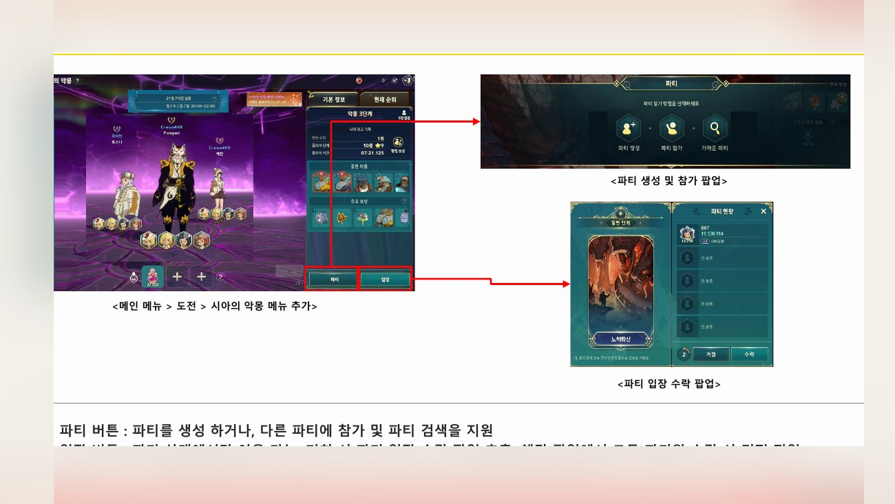
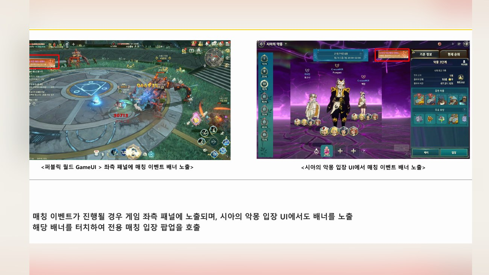
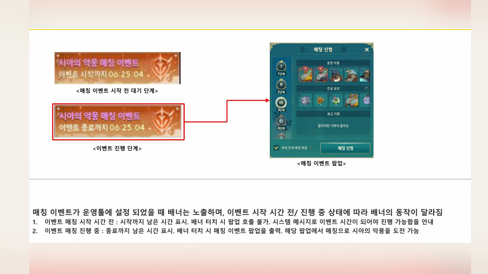
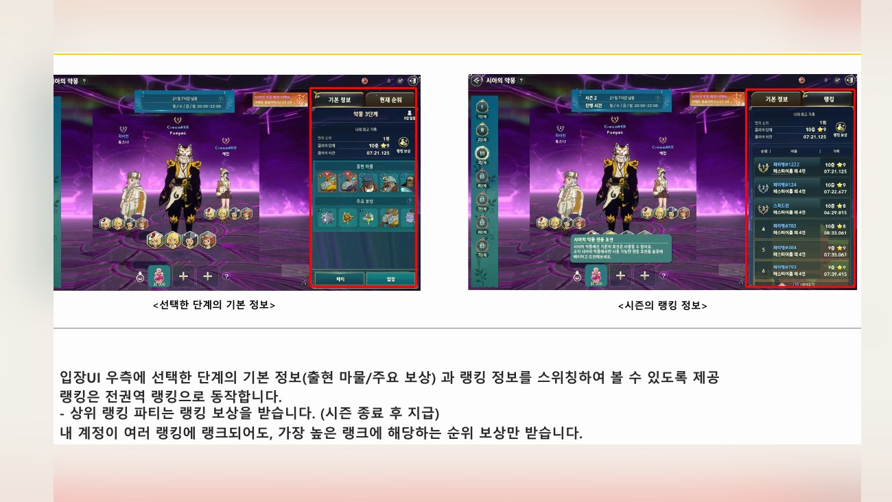
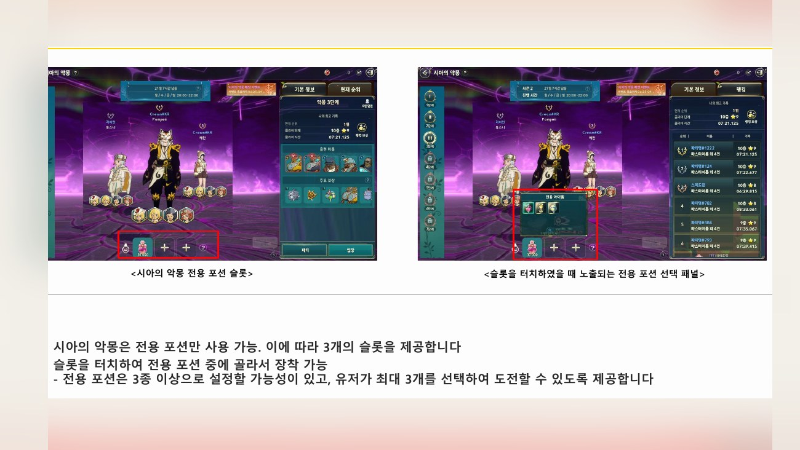
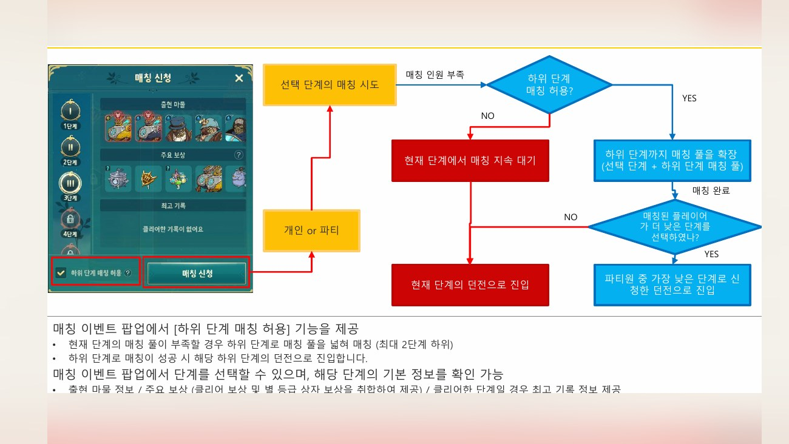
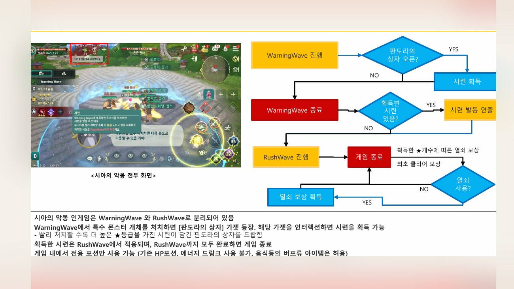
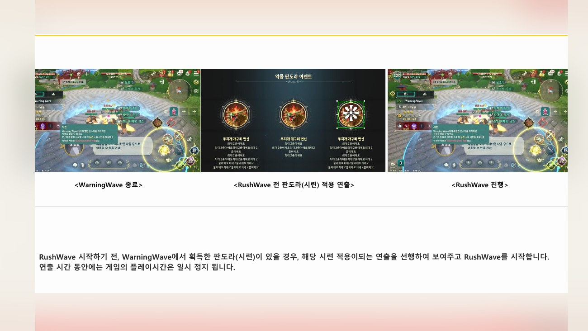
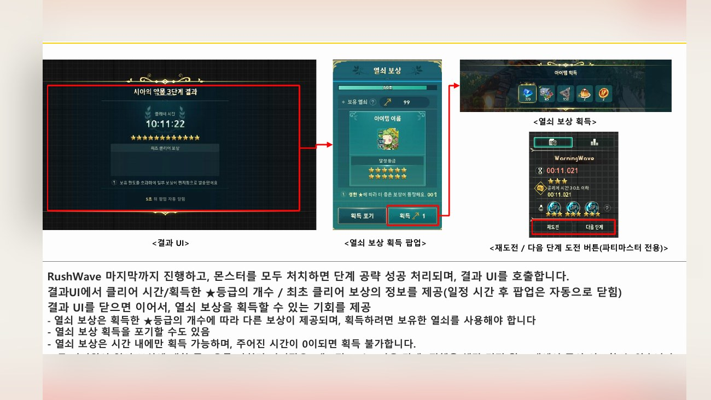
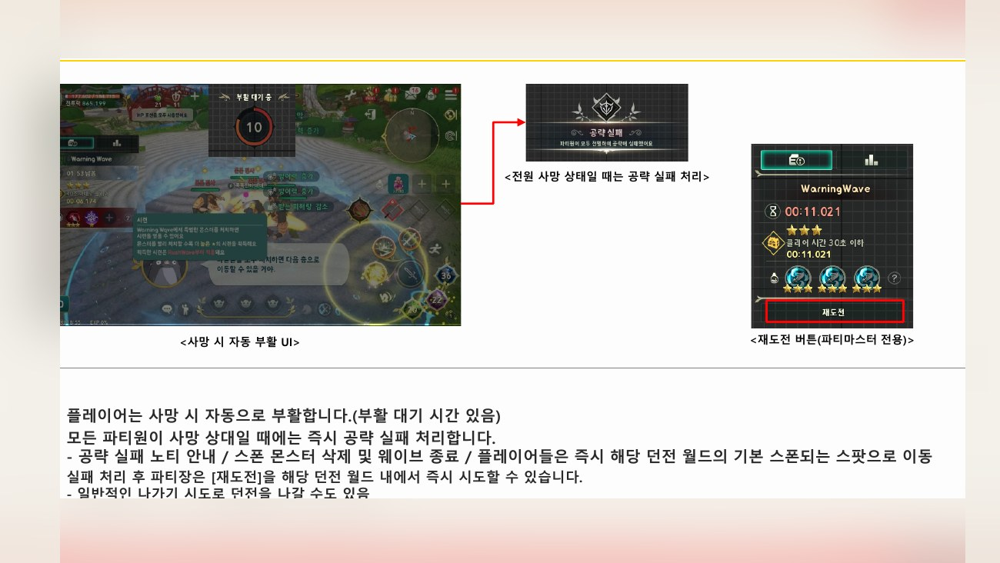
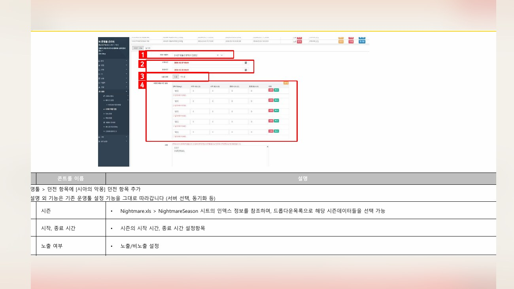